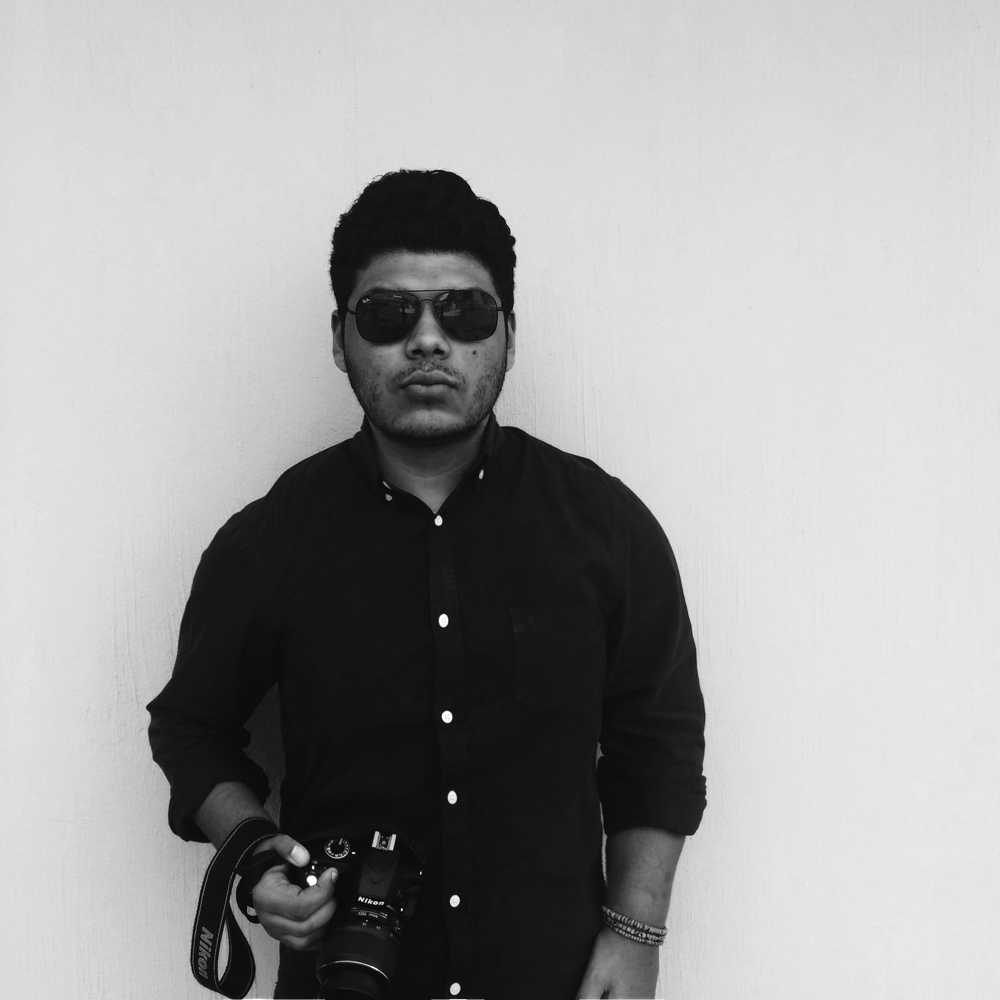

 My name is Francisco Amézquita and I´m a Computer Science Engineer Student at Tecnológico de Monterrey Campus Guadalajara here in México.
Since I was a kid, I´ve been interested in the way computers work, from the technical and logical perspective, being that one of the main reasons why I study Computer Science Engineering.
I always think how I can give the best of my day to day and develop myself in all possible areas, especially in former sciences in order to improve my environment and the environment of others.